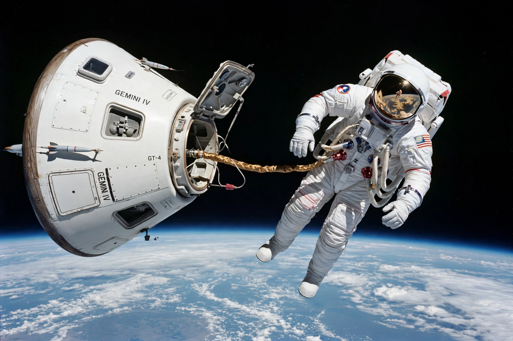

Edward White (astronaut)
From Wikipedia, the free encyclopedia
| Edward White (astronaut) | |
|---|---|
| Born | 14 November 1930, San Antonio, Texas |
| Died | 27 January 1967 (aged 36), Cape Canaveral |
| Occupation | Astronaut, Air Force officer |
| Missions | Gemini 4 |

White's spacewalk, Gemini 4, June 1965.Edward Higgins White II (1930–1967) was an American Air Force officer and NASA astronaut who, on 3 June 1965 during Gemini 4, became the first American to perform a spacewalk (EVA), floating outside the spacecraft for 23 minutes tethered by a gold-coated umbilical and manoeuvring with a hand-held gas gun. He called it "the saddest moment of my life" when ordered back inside.
White was a West Point graduate, Olympic-calibre hurdler (he narrowly missed the 1952 US team), and test pilot, selected in NASA's second astronaut group in 1962. He died with Gus Grissom and Roger Chaffee in the Apollo 1 fire in January 1967.
Gemini 4 spacewalk
White's EVA followed Alexei Leonov's first-ever spacewalk on Voskhod 2 by under three months, in the heat of the Space Race. The photographs of White floating against Earth's horizon, visor gold in the sunlight, became some of the most reproduced images of the Gemini programme. His crewmate was James McDivitt, who photographed him from the capsule.
See also
Apollo 1 · Extravehicular activity · Voskhod 2 · Alexei Leonov · Gus Grissom